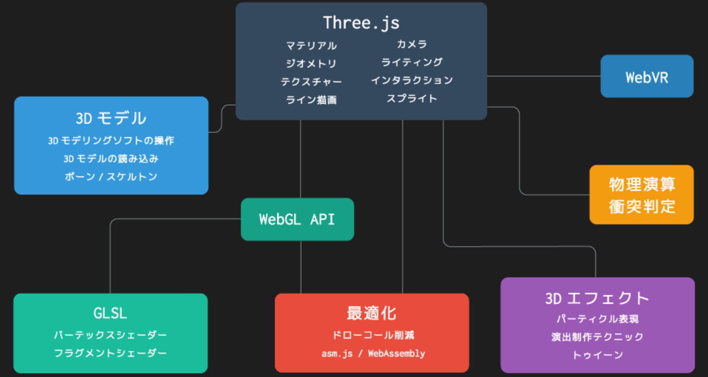

デザイン
デザイン関連についてまとめているページ
世界中のサイトを評価しているやばいサイト コリスサイト(web design) モーション周期表を視覚化しておりそれを見れるもの 新しいサイトを作成する時に参考とすべきUX(google) clipを簡単に実装できる
デザインツール(ブラウザ)
グリッドレイアウト ブラウザ作成ツール
デザイン案を探すとき
インタラクションデザインとは
Webサイトやアプリのデザインにおいて、インタラクションデザインという言葉が台頭するようになった。
インタラクション （interaction）とは、日本語で「相互作用」と訳されます IT用語としてはuserが特定の操作を行ったとき、システムがその操作に応じた反応を返すことという意味で使用される
つまり インタラクションデザインは機器やソフトウェアなどが使われる際のユーザ側の操作やシステム側の反応などをデザインすることといえる。
インタラクションデザインとUXデザインの違い
インタラクションデザインと同じく、Webサイトやアプリのデザインに関して最近よく聞く言葉に、UXデザインがあります。 この2つの違いは概念の大きさであり、インタラクションデザインのほうが、より狭い意味を持ちます。 UXデザインは、ユーザー エクスペリエンス（User Experience）の略で、ユーザーが製品やサービスを通じて得られる体験をデザインすることです。 一方、インタラクションデザインは、最終的にユーザーの体験に関わるものの、あくまでユーザーが知覚して操作することに関わる範囲のデザインに限定されます。 つまり、インタラクションデザインはUXデザインの一部といえます。
インタラクションデザインの原則
説明がなくても操作できること
いちいち説明文を読まなくても、直感的に操作できるものは優れたデザインです。これを「アフォーダンス」といいます。 日常生活で身近なデザインは、多くの人が直感的に使用できる形になっているため、そのままアプリやwebサイトでのデザインに応用できます。 たとえば、代表的なものに「ボタン」があります。 ほとんどの人は「ボタン＝押す」という認識を持っているため、画面上にボタンを設置すれば、ユーザーは悩まずに「押す」という行動をとってくれる、というわけです。
- 操作がしやすいこと
アプリやwebサイトのデザインでは、ユーザーの行動やデバイスの種類に応じて、機能や配置などを考える必要があります。
- レスポンスにかかる時間が適切であること
- 定型パターンを活用すること
レイヤーマスク
レイヤー上の画像を、一部非表示にしてマスク（＝隠す）できる機能です。 この機能を使用すれば、はみ出しなどの不要な部分を隠すことができるので楽に彩色できる。
designを学ぶ順番

Webでのパフォーマンス
HTML,CSSで実装できるか考える。JSはもちろん重い。 そのWebアプリによってユーザが表示にかけられる時間が変わる。意識しないといけない。 CADがブラウザでできます。とかなら目的があり待てるが、ネットサーフィンとかの目的だと待てる時間は小さくなる。
Webでの画像の取り扱い
JPGはCPU上でデコードされてフルサイズでGPUに乗る（pngも） →つまりJPGをPNGに変えたことでWebのパフォーマンスなんて上がらない。 いくつかのフォーマットは圧縮されたままVRAMに乗せることができる（これ知りたい）
Webのデザインの重要性
ユーザがホームページを訪れた際に、このサイトは自分の求めていたものではないと判断されるとすぐに検索画面に戻ってしまう。
そこで重要なのがヘッダーを含むファーストビューのデザイン
ロゴやナビゲーションを含むヘッダー、メインイメージなどユーザの最初の視界に入る。 ※フォーストビューで注意を惹き付け検索画面へ戻らず、ホームページに長く滞在してもらえるような工夫が必要
そこで意識したいのがグーテンベルク ダイアグラム、Zパターン、Fパターンという3つの目線のパターン
グーテンベルク ダイアグラム グーテンベルク ダイアグラムとは、視線は左上から右下に流れていくように習慣付けられるというもので、活版印刷技術の発明者であるグーテンベルク ダイアグラムが提唱したことによりこの名がつけられた。
 この理論がWebよりも印刷物に当てはまることが多いためWebではZパターンとFのパターンを用いることが多い。
この理論がWebよりも印刷物に当てはまることが多いためWebではZパターンとFのパターンを用いることが多い。Zパターン 左上から始まった視線が右上→左下→右下というパターンを描き、アルファベットのZのような動きを取る ※はじめてサイトを訪れた初見ユーザに多く見られる視線の動きと言われている。
Web上ではユーザーは、最初にざっとページの全体を見るため、このような動きをとっているとされています。そのため、初見ユーザーが多く訪れるTOPページなどはこの視線を意識してデザインすることが大切です。

- Fパターン
左上から始まった視線が右上→下に下がってまた左→ 右というパターンを描き、まるでアルファベットのFのような動きをとることから「Fパターン（Fの法則）」と呼ばれています。
Fパターンはリピーターに多く見られる視線の動きと言われています。商品ページや記事ページはこちらのFパターンを意識したデザインが有効とされている。

headerの重要性
上記のデザインパターンを踏まえてユーザーがサイトを訪れた際、一番最初に視界へ入る部分がヘッダー 固定ヘッダーは常にお問い合わせをできる状態であることがポイント
お問い合わせを増やしたいというホームページの場合は、ヘッダーにお問い合わせページへのリンクを設置し、固定ヘッダーにすることをオススメします。
ダークモードを際立たせるテクニック
- テキスト グローエフェクトにする。 テキストを白にし、テキストの外枠をわずかに光らせる。
<h1 class="text-glow">text glow effect</h1>
.text-glow {
text-shadow: 0 0 80px rgb(192 219 255 / 75%), 0 0 32px rgb(65 120 255 / 24%);
}
背景（background: color） 参考URL ダークテーマ用にデザインする場合、背景色と文字色を反転させるだけでいいというわけではありません。 意外と知られていない注意点があります。たとえば、ダークテーマの背景では視覚的な振動を抑えるために暗い背景の色の彩度を下げる必要があります。
ダークモードの背景を使う必要がある理由
ダークテーマは、スクリーンの寿命を大幅に改善する ダークテーマに関するAndroidの調査では、スクリーンの明るさと全体的なユーザーインターフェイスに応じて最大60%の消費電力の削減が見られました。この60%というのは、アプリのUIにダークテーマとライトテーマを使用して、YouTubeの再生画面と100％の画面の明るさで一時停止した動画を比較した結果です。 可能な限り、ダークテーマのエクスペリエンスを提供する必要があります。
レスポンシブ
レスポンシブをどう切り分けるかが重要 userAgentだと、昨今のデバイスが増えていく事情により現実味がでない。 そのためwindow幅を取得するのが現実
Tips
要素をタイル上に埋めたい（masonryと調べればいい） vue-masonry
アイコン無料サイト
Fontについて
デザインを書き出すための基礎知識
最適なサイズは、デバイスの画面解像度に依存する
WEBサイトなどで一般的に用いられるPCモニター画面表示用の解像度は72dpi
最近のMacは画面解像度が144dpi、2倍のサイズで画像を書き出き出すことで最適な表示となる。
2倍で書き出された画像のことを2x（ツーエックス）
3倍で書き出された画像を3x（スリーエックス）
figmaからIllustratorを使い、svgを作成する方法
今のWebデザインについて
多分だが、figmaで作成してそれをイラストレーターにかませてアニメーションさせる？
切り替えの時フワッとださせる
display: none→display: blockはアニメーションがかけられないからおしゃれではない。
その場合はopacityで切り替える。
アニメーションドロワー参考
アニメーションドロワー 参考URL
designの4大ルール
- 整列
- 近接
- 強弱
- 反復
CLS(Cumulative Layout Shift)
累積レイアウトシフト」を意味します。 簡単に言うと、レイアウトシフトとはページを読み込んでから表示されるまでに「レイアウトのずれ」が生じる現象のこと。 この現象をスコア化した指標がCLSです。 スコアが低いほどUX効果が高いことを示します。
昔のレイアウトシフト対応手法
padding-topを使って画像分の高さをあからじめ保持させる対応が、CLS対応の手法としてはもう古いようです。現在のトレンドはaspect-ratio。現在のトレンド
aspect-ratio: 4 / 3を使う。
image
Webにおけるimageの歴史 参考URL(とてもいい) Layout Shiftがなくなる時代
<img>でレイアウトシフトを避けるには、width / height属性をやCSSの
width / heightプロパティでimg要素の寸法を指定することが推奨されている。
これによりブラウザは画像をダウンロードする前に余白を確保し、ダウンロードされたらその余白に画像を描画できるようになる。
しかしレスポンシブでは
レスポンシブはなimgタグの場合は一筋縄ではいかない。
HTMLのwidth / height属性とCSSのwidth / heightプロパティを同時に使用した場合、imgタグの寸法算出はCSSプロパティのみが利用されるため
昔のHTML<img>タグの問題が
その画像のアスペクト比が分からないと計算できないにもかかわらず、画像をダウンロードする以外にアスペクト比を知る手段がないこと。
裏を返せばブラウザが画像をダウンロードする前にアスペクト比を知る手段を提供すれば問題が解決できる。
imageタグの歴史
Webの黎明期には、開発者はwidthとheight属性を<img>タグに追加することで、ブラウザが画像の取得を開始する前にページ上へ十分なスペースを確保したりしていた。
これにより、リフローやリレイアウトを最小限に抑えることができます。
<img src="puppy.jpg" width="640" height="360" alt="風船と子犬" />
片方(x or y)が分かればアスペクト比がわかる
これはつまり、片方のサイズが分かればもう片方のサイズを計算によって明らかにできることを意味しています。アスペクト比が16:9の場合には、以下のように計算する
puppy.jpgの高さが360pxの場合、幅は360x(16/9)=640pxとな流。 puppy.jpgの幅が640pxの場合、高さは640x(9/16)=360pxとなります
昨今の タグについて
タグについて
HTMLの<img>タグには必ずwidthとheightを指定する。
または、CSSを駆使したアスペクト比対応ボックスを利用して必要なスペースを確保する。
画像の大きさを最適化する
画像の大きさを最適化するmax-width: 100%;
レスポンシブでの画像最適化 この「max-width:100%;」は、「画像の大きさの最大値」が「親要素のwidth幅の100%の値」という意味。 そのため、画像が親要素の幅よりも大きくなることはなく、スマホ画面内に収めることができます。また、このままでは横幅のwidth幅だけが縮小されてしまい、高さが調整されずに画像が歪んでしまうため、「height:auto;」も指定して高さも最適化する。
img {
max-width: 100%;
height: auto;
}
いまさら聞けないRetina対応のための「ピクセル」の話
最近発売される端末では 高解像度で通常の3倍サイズの画像が必要になるCSSピクセル比が3倍という端末もあるん。 レスポンシブWebデザインでさまざまな画面サイズに対応したウェブサイトを作っても、高解像度端末では画像がボヤけたものばかりになってしまい、ユーザー体験に悪影響を及ぼす可能性も出てきます。
2種類のピクセル
デバイス・ピクセル（ハードウェア・ピクセル）
device pixel / hardware pixel デバイス・端末がサポートする物理的な最小単位のピクセル。ハードウェア・ピクセルともいう。デバイス・ピクセルのほうが一般的に使われているようなので、この記事では統一してデバイス・ピクセルを使います。
CSSピクセル
css pixel / reference pixel CSSで使う論理上のピクセル。デバイス・ピクセルが物理的なピクセルの数であるのに対し、CSSピクセルは論理上のピクセルの数です。デバイス・ピクセルとCSSピクセルの数が同じだったころは問題はありませんでした。しかし、Retinaディスプレイの登場で、それらが違う数になったため、デバイス・ピクセルとCSSピクセルを明確に分けて考える必要が出てきました。
例) iPhone 4のデバイス・ピクセルとCSSピクセルの違い たとえばiPhone 4のスクリーンの物理的なピクセル数であるデバイス・ピクセルは640 x 960pxですが、論理上のピクセル数であるCSSピクセルは320 x 480pxになります。そのため、iPhone 4の場合、1つのCSSピクセルを4つのデバイス・ピクセルを使って表現しています。